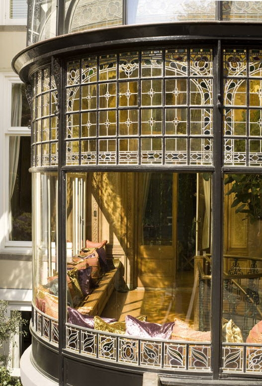
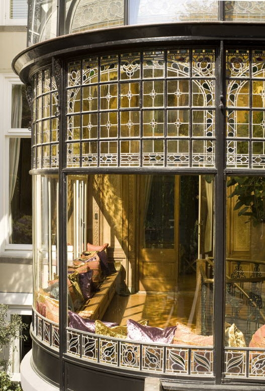
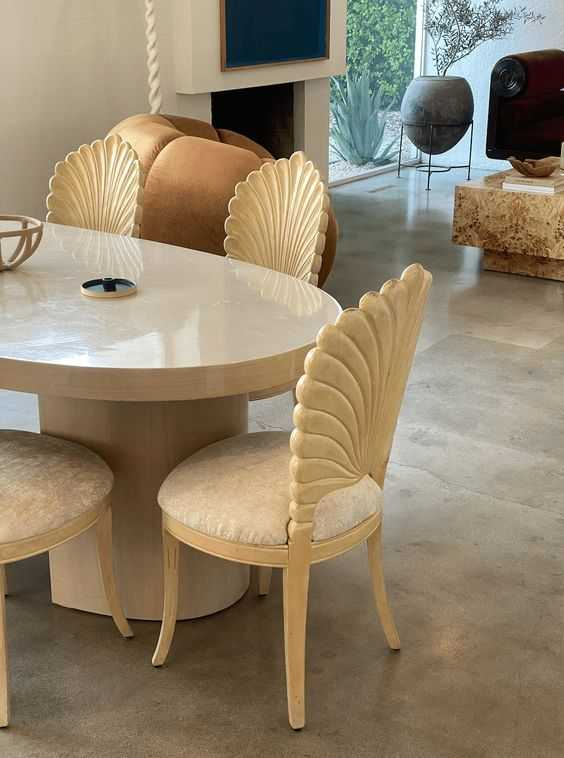
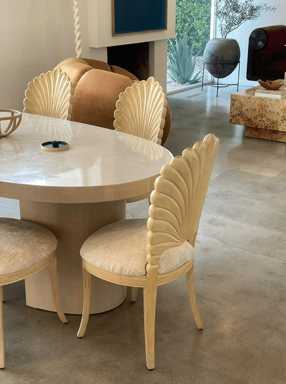
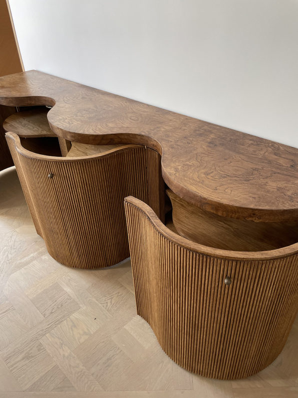
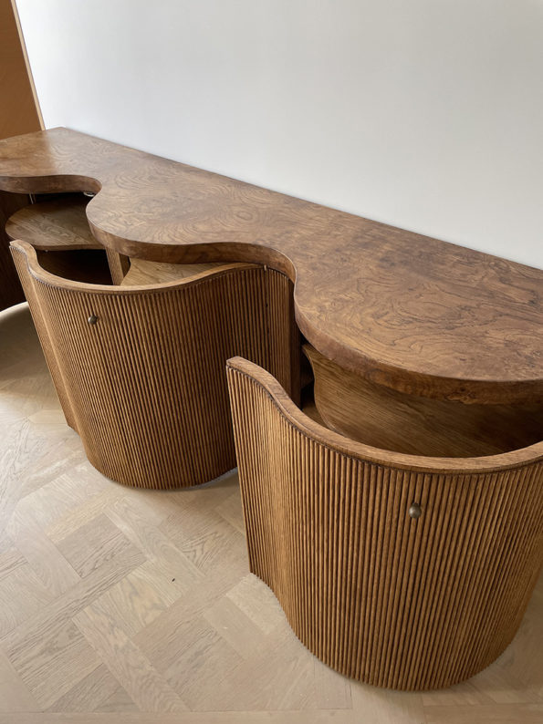
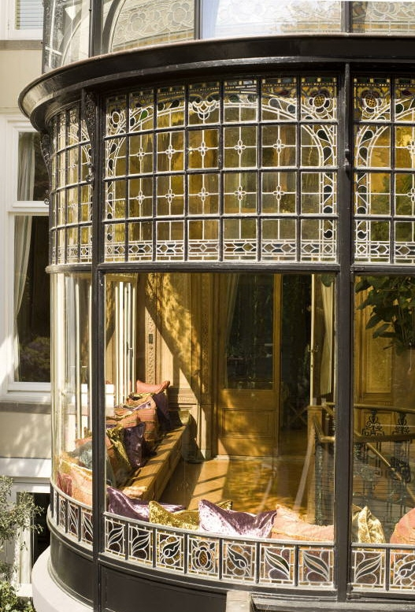
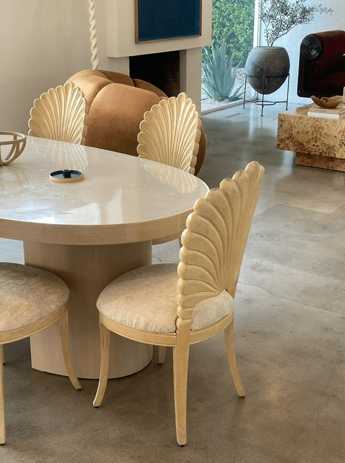
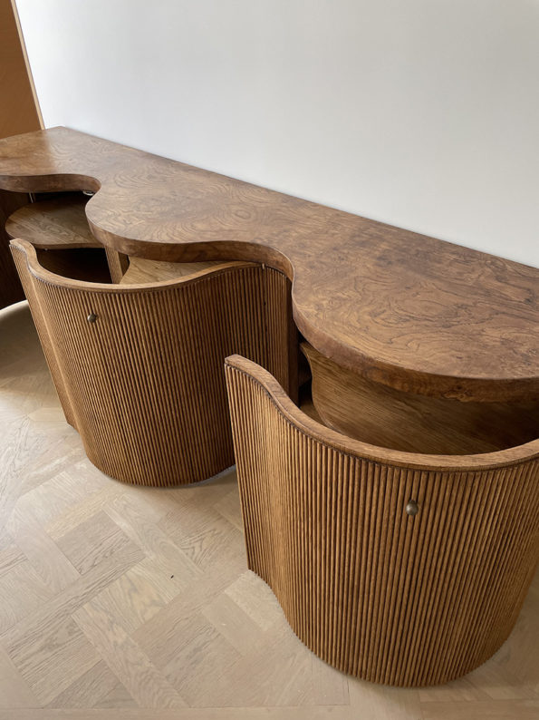

 



 

Beautiful forms found in facades and interiors, captivating the ornate craft of architects old and new. The varying scale at which this style of design is represented mirrors the multifaceted realm of organic inpiration that these designers draw from.


